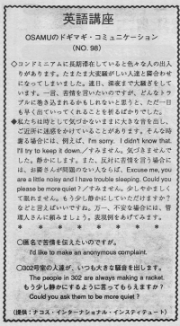

匿名で苦情を伝えたいのですが。
People staying a long time in a condominium can see many people. Osamu had a room next to noisy people. Every day, they had a party until late at night. He wanted to complain but he was worried about getting into trouble. So he just prayed Please, just leave!
コンドミニアムに長期滞在していると色々な人の出入りがあります。たまたま大変騒がしい人達と隣合わせになってしまいました。連日、深夜まで大騒ぎしています。一言、苦情を言いたいのですが、どんなトラブルに巻き込まれるかもしれないと思うと、ただ一日も早く出ていってくれることを祈るばかりでした。
私たちは時として気付かないままに大きな音を出し、ご近所に迷惑をかけていることがあります。そんな時、謝る場合には、例えば、「すみません。気づきませんでした。静かにします」／I’m sorry. I didn’t know that. I’ll try to keep it down.／また、反対に苦情を言う場合には、お隣さんが問題のない人tならば、「すみません。やかましくて眠れません。もう少し静かにしていただけますか？」／Excuse me, you are a little noisy and I have trouble sleeping. Could you please be more quiet?／などと言えばいいですね。万一、不安な場合には、管理人さんに頼みましょう。表現例をあげてみます。
匿名で苦情を伝えたいのですが。
I’d like to make an anonymous complaint.
もう少し静かにするように言ってもらえますか。
Could you ask them to be more quiet?
３０２号室の人達が、いつも大きな騒音を出します。
The people in 302 are always making a racket.

| © 1995-2013 NACOS International Institute. All Rights Reserved. |